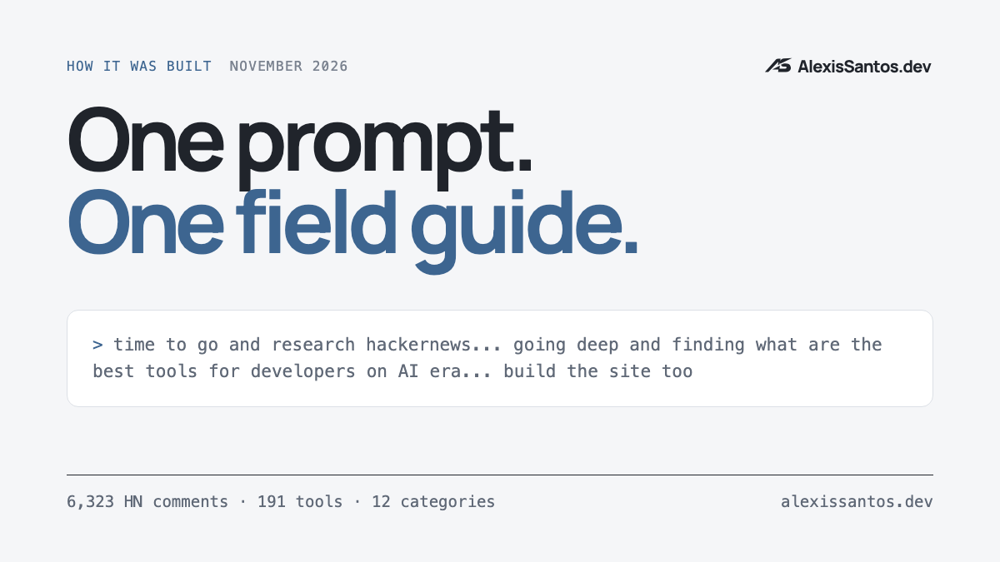

One Prompt, 6,323 Hacker News Comments

On Saturday evening I typed one message into Claude Code. Typos included, this is the whole thing:
time to go and research hackernews... going deep and finding what are the best tools for developers on AI era to create a list of them. useful harnesses that are trule top notch and categorise them in different categories of top 10 of each category. nice visuals website to share with people (dont look like ai slop). search and proposed other sources of information to collect these tools beyond hacker news, places where developers are... and scrap this stuff. build the site too
Under an hour later there was a page on this site: a field guide to AI dev tools, 12 categories with a top 10 in each, ranked from 6,323 Hacker News comments and five other sources, with a write-up for every tool and a downloadable data file. Everything in the guide came from that message. My next messages were about posting it, not building it.
This is how it got there, including the parts it got wrong and caught on its own.
It started with the best data, not the most data
The first scrape pulled 3,229 HN stories about AI tooling since January 2025. Most of it was noise: launches, drama, Raspberry Pis. The agent noticed that the strongest signal wasn't in the stories at all. It was in the Ask HN threads where people describe their own setup: “What's your current AI agentic setup?”, “How is AI-assisted coding going for you professionally?” and 22 more.
Those 24 threads hold 6,323 comments from people saying what they actually run. Counting distinct people who name a tool there became the core of the score. Everything else is a cross-check: HN comment volume and front-page points, Lobsters, dev.to, GitHub, and npm and PyPI downloads.
It also proposed sources it couldn't reach. Reddit blocks anonymous scripts, so it went on a list for later with a proper API key, next to OpenRouter's app rankings, editor marketplace installs and a few newsletters. That list is on the page too.
The bugs it caught in its own measurement
This is the part I didn't expect. A naive version of this project produces confident nonsense, and the agent found most of the ways it would have gone wrong:
- Search typo tolerance. The first pass said Codex was mentioned in 733,000 HN comments in a year. HN's search had been matching “code” as a typo of “codex”, and “line” for “Cline”. It switched typo tolerance off and checked every count against a sample of 100 comments.
- A survey that answered itself. The November setup thread listed example tools in its questions, and people pasted the questions back into their answers. Those quoted lines were stripped before counting.
- Name collisions. Most “Garak” comments were about Star Trek. “Phoenix” was usually the Elixir framework, and Daytona's biggest HN story was about a Dodge car. Mentions that turned out to be about something else were discounted.
- Fake popularity. Several 2026 repos sit at 80k to 440k GitHub stars with almost no discussion anywhere. One has 152k stars and three HN comments in a year. So stars count for little in the score.
Counting isn't reading
A list ranked by mentions puts LangChain near the top, and anyone who reads HN knows that isn't praise. So after scoring, the agent split the work across four sub-agents. Each one read the comment evidence for three categories, 2,527 snippets in total, labelled every snippet as positive, negative, mixed or a false match, and wrote a short verdict citing the comments it came from.
Tone moves a score by up to six points, and the complaints stay in the write-ups. Cursor still ranks second among editors, “often described as where commenters used to be”. Before publishing, the main agent spot-checked the most striking claims against the cited comments, softened a few that rested on a single source, and fixed a wrong link it found along the way.
Not looking like AI slop
I asked for that explicitly. The first design was an editorial layout: hairline rules, monospaced data and one chart, with no cards, gradients or emoji. Then it noticed my site repo had moved on since I last pulled it, with a new brand system, so it rebuilt the page on my fonts, colours and logo before shipping. It also rendered the share image itself with headless Chrome.
What “one prompt” actually means
The research, the scoring, the write-ups and the page came from that single message. The follow-ups were about shipping, not building:
- picking when and how to post it on X, and moving it a day so it wouldn't collide with another post
- making English the main language of this site, which was a separate change
- one bug it introduced: the sticky category bar fought your scrolling. It reproduced it, found the cause and shipped a fix
I made the calls that are mine to make: what goes out under my name, when, and in which language. The agent did the rest.
What I take from it
The scraping and the HTML are the easy part. What made the output trustworthy was judgement: noticing that the setup threads were the real signal, distrusting a number that looked too good, reading the comments instead of counting them. That is the work I'd want from a good engineer, and here most of it happened without me asking.
The guide is at alexissantos.dev/ai-dev-tools, the data is in tools.json, and the whole pipeline (scrapers, scoring and the verdict evidence) is on GitHub if you want to rerun it or argue with the weights.